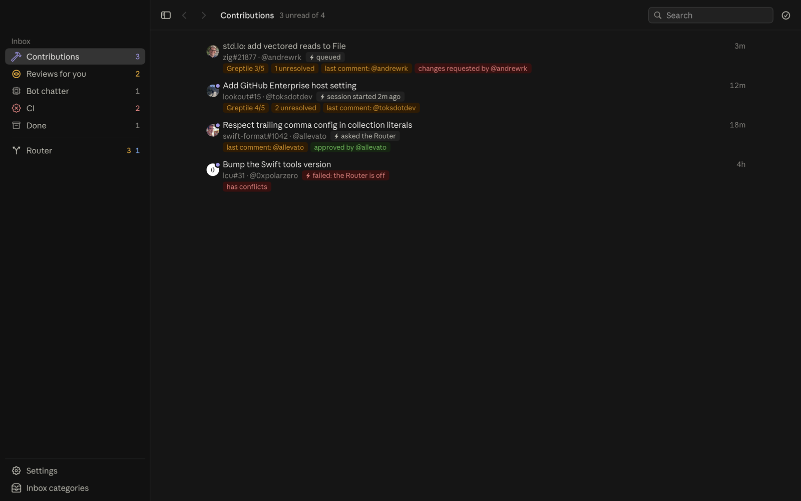
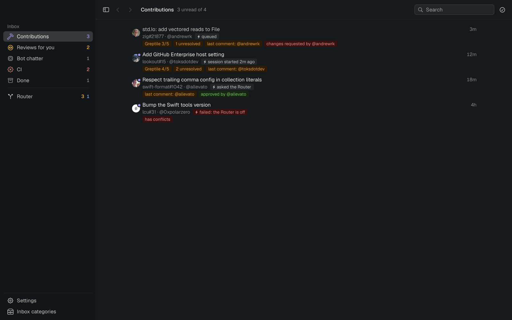
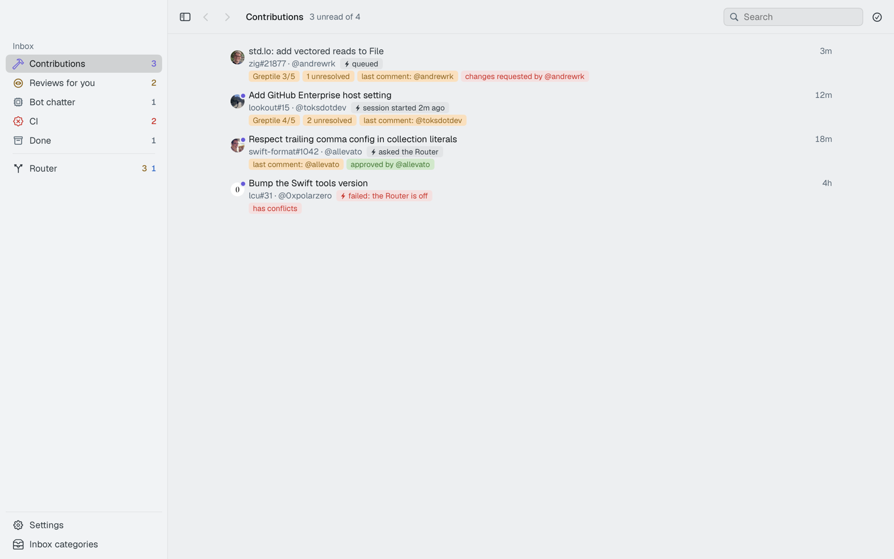
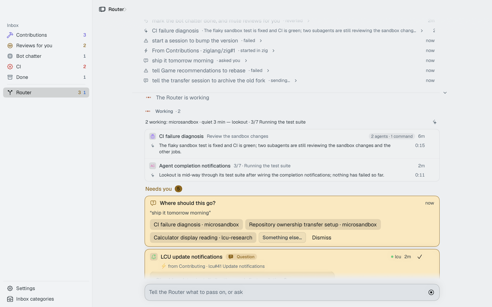
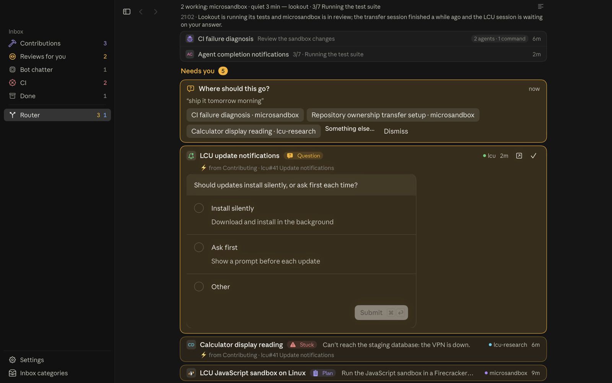
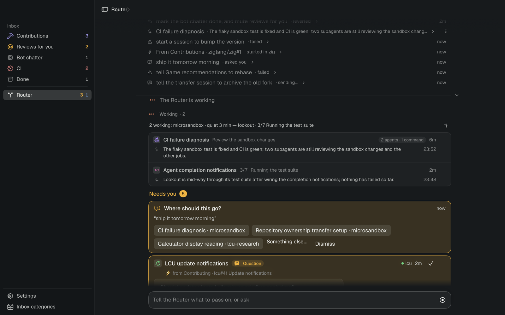

Fjord
The power without the storm.
01 Story
Amont is the upstream side of a river. A fjord is where it reaches the sea: deep water, made still.
ProductFjord, an Amont Labs product. Tools inside: Triage (GitHub inbox and CI) and Router (one chat over your Claude Code sessions). Later: Diff, Sweep.
HeadlineThe power without the storm. Agents make you faster; Fjord keeps it calm.
Domainsfjord.computer, fjordcomputer.com (unregistered on 10 Oct). Trademark check against Accenture's FJORD marks before launch.
02 System
The studio's system, unchanged.
From amont/brand: two themes, one accent, Geist and Newsreader. Fjord adds what a developer tool needs: state colours.
paper
#F7F8F5
#F7F8F5
ink
#101418
#101418
panel
fonte
#0F9AC3
#0F9AC3
passing
needs you
failing
NameSet in Geist 500, tracking −4%, like every studio product. No product glyph: the studio's mark is amont^, and products are names. The app icon comes from the fjord render (03).
TypeGeist for the interface, Geist Mono for refs, times and counts, Newsreader for questions and quoted comments. All three ship in the app, replacing Anthropic Sans read from Claude's bundle.
ColourThe app keeps its blue and its category, project and state colours.
Shape and motion4 px radius, hairline rules, the studio curve
cubic-bezier(.2,.7,.2,1), no overshoot.
03 Image
A real fjord, in the studio's renderer.
The background of this page: Nærøyfjord from open elevation data, baked with the scripts behind amontlabs.com, drawn live by the same signature.js. The meltwater river runs into the fjord.
04 App
The current design, as Fjord.
The real app, now the default look (light or dark follows the Mac, live; FJORD_THEME=dark|light|claude pins one). Layout, icons, colours and cards stay; the type and neutrals move to the studio's.






TypeAnthropic Sans, read from Claude's bundle, becomes Geist; SF Mono becomes Geist Mono. Both ship with the app.
NeutralsClaude's warm greys become the studio's cool ink ramp, each surface keeping its lightness; light mode flips them onto paper.
AccentClaude's blue stays in the app. Fonte remains the studio's colour for the site and the mark.
KeptLayout, icons, category colours, the amber "needs you" cards, tags, density. Clay stays for what is Claude's.
05 Decide
1Follow the studio system as is (themes, fonte, type), with amber and red as the only additions.
2No product glyph; app icon from the fjord render.
3Keep the current design; adapt it as in 04 (type, neutrals, accent, a light mode).
4Nærøyfjord as the image.